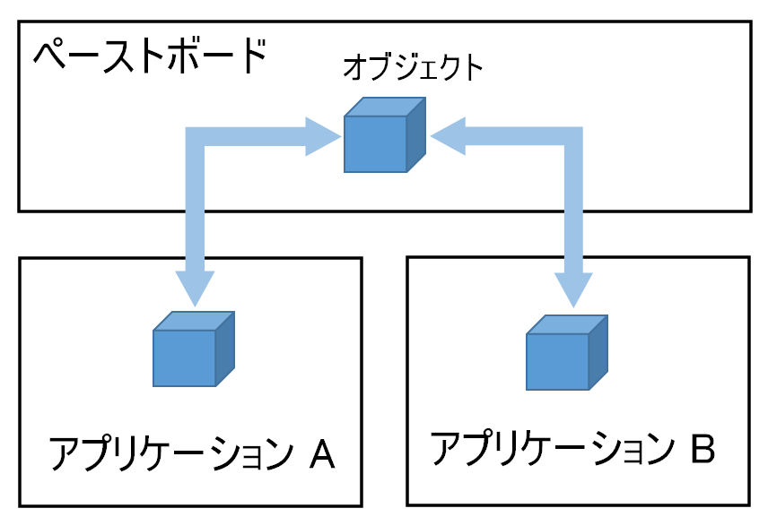

Finderからイメージファイルをコピーしビューに
表示する
![[copy_paste1]](copy_paste1.png)
画像をクリックすると動画になります。
本章ではペーストボードにコピーされたオブジェクトをビューに貼り付ける処理について説明する。
他のアプリケーション（Finder）からFile URLオブジェクトをコピーし、ファイルがイメージ（png, jpeg等）であれば当アプリケーションのビューに貼り付け表示する。コピー＆ペーストによるオブジェクトの受け渡しは Generalペーストボードを介して行われる。貼り付け処理はNSViewクラスのサブクラスに実装する。
ペーストボードのイメージ
Generalペーストボードへの接続
貼り付けの実行
AppDelegateにメニューのアクションを実装する。メニューアイテムの pasteが選択が選択されたときビューオブジェクトの貼り付け処理を実行する。
FileURLからファイルパスを取得し、ファイルからイメージを読み込み、ビューに表示する。NSViewクラスのサブクラスに実装する。
オブジェクト有無の事前チェック
メニューが開いた時に、ペーストボードに貼り付け可能なFileURLオブジェクトが存在するかチェックし、メニューの pasteアイテムの編集を行う。オブジェクトがあれば アイテムを有効とし、なければ無効としメニューから選択できないようにする。
AppDelegateの中で NSMenuDelegateプロトコルの menuWillOpen(_:)メソッドを実装する。
（注）UTIは要はファイルの拡張子であるので、拡張子を恣意的に異なるものに変えたら、本来の種類を認識できなくなる。その場合この方法では判定できない。
また UTTypeConformsTo関数を使用すれば UTIの階層構造を利用しファイルの種類の判定を簡単に行うことができる。
PNGファイル、JPEGファイルを表すUTIは、それぞれ "public.jpeg" "public.jpeg" であるが、これらは、UTI "public.image" から継承したものである。
UTTypeConformsTo関数はファイルが特定のUTI、またはそこから継承するUTIに含まれるか否かを判定する。オブジェクトのクラスを判定する is演算子と同じような働きである。
（注）この関数は現在 当環境のmacOS10.12.6では非推奨になっているが一応動いている。macOS 11.0+では 新しく UTTypeクラスによる判定に移行するようだ。
ソースコード
ドラッグ＆ドロップ、コピー＆ペーストの全ての処理を網羅した共通のアプリケーションとなっている。
AppDelegate アプリケーション制御
UAView NSViewクラスのサブクラス
NSView+imageDisplay イメージの表示サイズを変更するユーティリティ